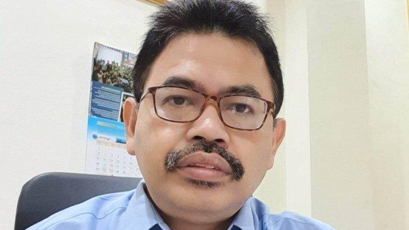

Sekolah di Masa Corona
Oleh: Mujiburrahman Rektor Universitas Islam Negeri (UIN) Antasari
BANJARMASINPOST.CO.ID - KALAU sudah terbiasa enak, tiba-tiba susah, orang akan gampang mengeluh. Sebaliknya, kalau sudah terbiasa susah, tiba-tiba dapat enak, senangnya bukan main. Manusia seringkali tidak mampu menyikapi hidup sebagaimana adanya. Ia cenderung berlebihan dan melampaui kewajaran. Salah satu contohnya adalah cara kita menyikapi pembelajaran daring.
Pada 15 Juni 2020 silam, empat menteri kita (Menteri Pendidikan dan Kebudayaan, Menteri Agama, Menteri Kesehatan dan Menteri Dalam Negeri) mengeluarkan Keputusan Bersama tentang Panduan Penyelenggaraan Pembelajaran di Masa Pandemi Covid-19. Inti keputusan ini adalah, pembelajaran tatap muka di sekolah hanya boleh di zona hijau, sedangkan zona oranye, kuning dan merah tidak boleh.
Karena Kalimantan Selatan termasuk zona (sangat) merah, Gubernur pun mengeluarkan Surat Edaran tanggal 15 Juli 2020, yang menegaskan pembelajaran di satuan pendidikan PAUD/RA, SD/MI, SMP/MTs, SMA/MA/SMK dan SLB pada semester gasal ini dilakukan secara daring, yang disebut Belajar Dari Rumah (BDR).Sekolah diminta memaksimalkan sumberdaya yang dimiliki. Jika tidak taat, akan dikenai sanksi.
Dua minggu sudah kebijakan BDR ini berjalan. Keluh kesah mulai bermunculan, terutama karena alasan ekonomi/miskin. Tidak semua siswa punya ponsel apalagi laptop, dan jika pun punya, mungkin hanya satu ponsel yang dipegang orangtua. Pembelajaran daring juga menuntut kuota internet yang lumayan besar, sementara uang untuk membelinya tidak ada. Di daerah tertentu bahkan sinyal pun tak ada. Orangtua yang miskin dan mampu sama-sama mengeluh soal mendampingi anak. Yang miskin bilang, dia tidak bisa melakukannya karena berpendidikan rendah dan sibuk mencari nafkah. Yang mampu bilang, dia terpaksa menanggung dua beban: mendampingi anak BDR dan mengerjakan tugas kantor. Jika dia seorang ibu, ditambah lagi tugas mengurus rumah. Ada ibu yang stroke gara-gara semua ini.
Di sisi lain, para guru pun mengeluh. Sebelum semester dimulai, mereka sudah sibuk belajar berbagai aplikasi daring, dari yang paling sederhana hingga yang rumit, dari yang menuntut kuota internet yang besar hingga yang paling murah. Pelatihan secara daring diikuti sampai larut malam. Kemudian si guru menyiapkan bahan ajar dan aplikasi tertentu untuk diterapkan. Semua ini menyedot energi yang banyak.
Ketika tiba saatnya berkomunikasi dengan para siswa untuk pembelajaran, belum apa-apa siswa sudah mengeluh bahwa ini akan menghabiskan kuota internet yang besar, bahwa ada yang tidak punya ponsel, bahwa guru terlalu banyak memberi tugas. Padahal, aplikasi yang akan dipilih pun belum diputuskan bersama. Adab, sopan santun kepada guru juga mulai terkikis. Kata-kata kasar seenaknya diumbar.
Akhirnya, guru dan siswa/orangtua saling menyalahkan. Siswa/orangtua menuduh guru/sekolah tidak mempedulikan kesulitan yang dihadapi siswa/orangtua karena menggunakan aplikasi mahal biaya dan memberi banyak tugas. Guru membalas dengan mengatakan, siswa/orangtua tidak mau mengapresiasi kerja keras guru. Kesulitan orangtua mengajari anak sendiri menunjukkan betapa beratnya tugas guru.
Jika kita cermati lebih dalam, salah satu sebab di balik polemik ini adalah, masing-masing pihak diam-diam masih membayangkan keadaan normal seperti dulu. Orangtua melepas anaknya ke sekolah dan guru aktif mengajar tatap muka seperti biasa. Padahal, kita tengah menghadapi kenyataan yang jauh berbeda, yakni ancaman Covid-19. Ini bukan normal yang dulu. Ini normal baru yang harus diadaptasi.
Namun, polemik ini dapat menjadi positif jika dijadikan bahan untuk memperbaiki kekurangan yang ada, bukan untuk memaksakan anak masuk sekolah sementara keadaan masih belum hijau. Kepala sekolah/ guru bersama orangtua bisa beruding mencari jalan keluar. Memilih aplikasi yang murah biaya, bantuan kuota internet, ponsel bahkan peminjaman laptop dari sekolah mungkin saja menjadi jalan keluar.
Pada awal 1970-an, Ivan Illich menulis Deschooling Society (Masyarakat Tanpa Sekolah). Menurutnya, sekolah telah mengganti pendidikan dengan nilai rapor dan kompetensi dengan ijazah. Pendidikan menjadi formalitas tanpa isi. Ia ingin agar orang belajar pengetahuan dan keterampilan yang benar-benar diminati dan dibutuhkannya dalam hidup. Masyarakat harus aktif mendidik anak-anak mereka.
Kritik IIlich bukan untuk ditelan mentah-mentah, tetapi berguna untuk keseimbangan. Alih-alih menjadi masyarakat tanpa sekolah, pembelajaran daring masa Covid-19 makin membuktikan bahwa sekolah dan orangtua/masyarakat harus bekerjasama. Begitu pula, teori liberal tentang pembelajaran yang terpusat pada siswa harus diimbangi dengan pandangan tradisional bahwa guru adalah pusat pembelajaran.
Covid-19 menantang kita untuk menemukan jalan tengah antara pendidikan liberal dan tradisional